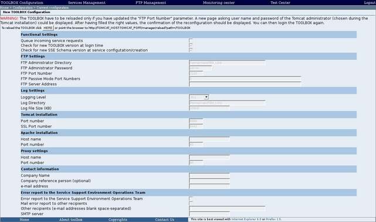

To configure the TOOLBOX you have to log into the TOOLBOX.
 The
configuration page is automatically displayed at the first login after
the installation. In this case the following two steps have to be
skipped.
The
configuration page is automatically displayed at the first login after
the installation. In this case the following two steps have to be
skipped.
To configure the TOOLBOX click on the "TOOLBOX configuration" link on the toolbar. The browser should display

click on the "Change the configuration" section link. The browser should display

 Ignore the possible values in the various fields: they have
to be customized!
Ignore the possible values in the various fields: they have
to be customized!
The main table contains three sets of parameters, depending
on the type of settings:
Tomcat installation (depending
on hardware configuration)
Apache installation (depending
on hardware configuration)
If
you need to let TOOLBOX answer to incoming requests to port 80 you need
to install Apache with proxy extension. If properly set, all incoming
requests (web page access, SOAP messages etc.) are transparently
forwarded to Toolbox. For a detailed description on how setup Apache to
provide a proxy, please read here.
These parameters have to be filled only if
Apache is used as proxy server.
Proxy settings (depending
on local network configuration)
These parameters have to be filled only if
the local network uses a proxy to route outgoing HTTP messages.
Contact information
This
information will be used in the email sent to the Service Support
Environment Operations Team each time a request arrived to the TOOLBOX
fails. Moreover it is included in the info page deployed when a new
service is created. This page is referenced in the WSIL file.
Error report to the Service Support Environment Operations Team
The
service provider can optionally choose to send an e-mail to the Service
Support Environment Operations Team each time a request arrived to the
TOOLBOX fails. The Service Support Environment Operations Team e-mail
address is known to the TOOLBOX and the service provider is not
required to specify it. Instead, the service provider can optionally
specify other recipients for the error report e-mail.
ebRR configuration parameters
This section allows the administrator to configure ebRR specific parameter.
Security
This
section allows the administrator to configure a keystore at Toolbol
level. These settings will be used when security enforcement is enabled
on a service. In these case the keystore should contain the
key of the Identity Provider so that the SAML token, taken from the
incoming message, can be decrypted and, in case of proxy services,
re-encrypted with the IDP public key. For
further information about securing a service, please refer to the
specific section (here)
After having filled the fields above, click on the "Configure" button. The browser should display

Now the TOOLBOX has to be reloaded in order to apply all settings. Restart Tomcat for a full configuration reload.